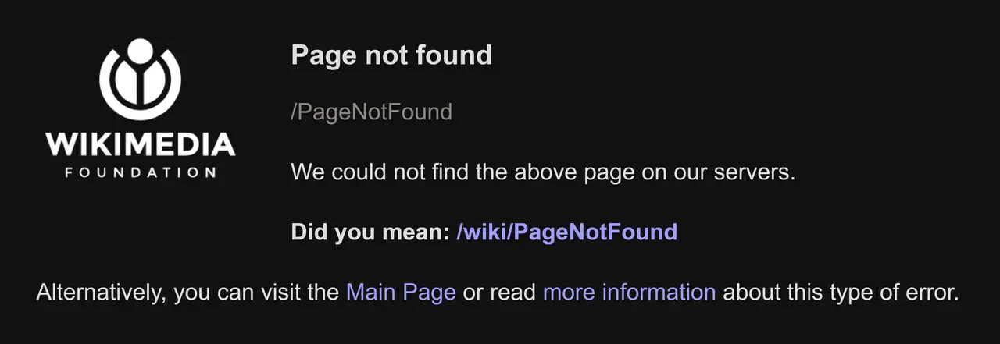

短答
404 表示这个 URL 眼下不是一份文档。
对于退役或拼错的路径，这是诚实的状态。410 表示移除是有意且持久的。301 用于确实存在替代品时。SEO 健康希望状态与事实一致。内链不应继续指向你已经决定不存在的 URL。
定义
未找到插图是给人看的页面。状态码是给机器的句子。它们应该一致。返回 200 的带样式 404 模板是软 404，作为单独的记录处理，因为爬虫可能把这个 URL 当成一份写满“未找到”的活文档。
抓取怎样遇到这条规则
对真正不存在的 URL 返回 404 或 410，并去掉指向它们的内链。
只有当替代品是同一意图时才保留 301，例如仍然存在的改名产品。把每个 404 都重定向到首页，会让首页变成无关 URL 的桶，并扰乱人和规范链接的故事。审计样例是退役路径、状态，以及仍然指向它的内链。

要检查什么
- 退役路径上的 404 或 410 状态
- 仍然指向这些路径的内链
- 只说项目不存在却返回 200 的页面
- 被当作万能桶的首页重定向
- 仅当意图匹配时才用后继 301
一个结构示例
一个停产垫片的 URL 返回 200 和一个愉快的空状态，三个产品页仍链接向它。修复是真正的 404 或 410，去掉那些链接，并且不重定向到首页。如果存在后继垫片，301 指向那里，链接也更新到后继产品。
它不声称什么
诚实的 404 不保证排名或引用。
Mika Visibility 把它归到哪里
Mika Visibility 把可抓取性放在 SEO 健康：robots 规则、状态码，以及爬虫能跟着走的路径。断开的路径和被挡住的模板是健康发现。缺主题不是。GEO 仍然依赖爬虫真正能到达的页面，但到得了并不等于替买家写好了答案。
插图是通用的未找到图形，因此文章可以把给人看的页面和状态码分开。
常见问题
404 表示什么？
404 表示这个 URL 眼下不是一份文档。
内链应该怎样处理？
对真正不存在的 URL 返回 404 或 410，并去掉指向它们的内链。
诚实的 404 能保证排名吗？
诚实的 404 不保证排名或引用。
下一步
做一次结构化的 SEO + GEO 审计，查看健康发现、增长缺口和可以执行的蓝图。
更清晰的实体、答案、证据和上下文，会让页面更容易被理解与引用。任何回答产品中的结果都不作保证。